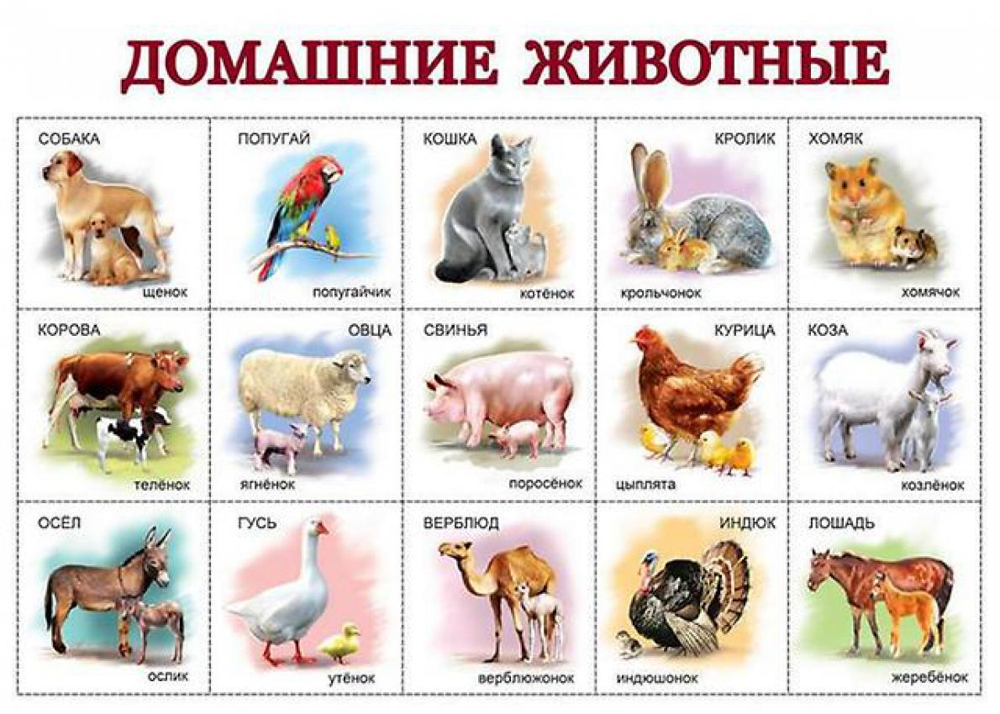

Рассмотри сначала минусы домашних животных:
Приучение к туалету. Процесс довольно долгий и требующий от хозяев терпения и внимательности. Следует учесть, что кошки обычно соображают что к чему к исходу второй недели. У щенка же процесс приучения может длиться до полугода.
Шерсть, грязь и паразиты (вши, клещи и т. д.). По этой причине многие отказываются заводить домашнее животное. Но стоит помнить, что эта проблема легко устранима. Линяют животные испытав стресс, либо сезонно (весна/осень). Решение вопроса линьки - специальные витамины и регулярное вычёсывание. Грязь ваш пёс может принести с прогулки. Чтобы не допустить её распространения по квартире, достаточно протереть, либо помыть лапы питомца. Проблему паразитов можно предупредить своевременной профилактикой специализированными препаратами.
Нежелательное потомство. Кот может подраться с себе подобными или вовсе убежать из дома. Кошка будет испытывать волнение, кричать. А если вы не уследите за ней - "порадует" появлением множества котят. С собаками вас ожидает то же самое. Если вы не намерены это терпеть и не собираетесь разводить домашних животных - вам необходимо стерилизовать вашего любимца. Это поможет сберечь ваши и его нервы.
Испорченные вещи. Щенок может почесать зубы вашей обувью, а котёнок поточить когти о новую мебель. Чтобы этого не произошло, следует подарить кошке специальный столбик для заточки когтей. А пса можно порадовать специальной косточкой из ветеринарного магазина и резиновыми игрушками. А вещи, которые ваш питомец теоретически может испортить необходимо убрать. На всякий случай.
Плюсы домашних животных:
- Заводя домашнее животное вы получаете верного друга, который всегда будет рядом. Очень интересно и познавательно наблюдать за его играми и поведением. А ваши дети, общаясь с животными, станут добрее и ответственнее.
- Если ваш домашний любимец - щенок, его необходимо выгуливать. Благодаря этому обстоятельству вы будете больше времени проводить на свежем воздухе.
- Питомцы также могут быть полезны. Собака будет вас охранять и сопровождать на охоту. Канарейка порадует чудесным пением. А кошка избавит от грызунов. К тому же, если ваш любимец "голубых кровей" - он может внести вклад в ваш семейный бюджет, произведя на свет благородное потомство.
